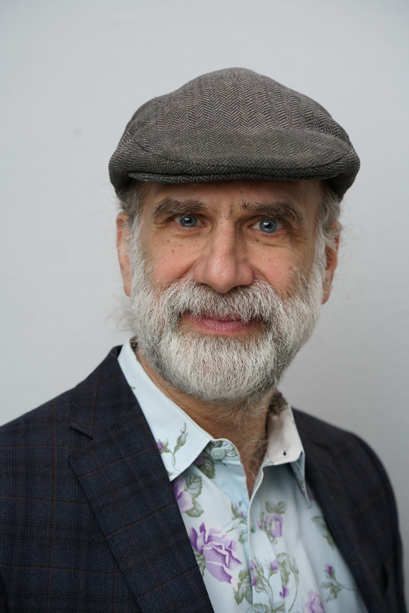

Testifying Experts
Serge Egelman

Bruce Schneier
Bruce Schneier is an internationally renowned security technologist, called a “security guru” by the Economist. He is the New York Times best-selling author of 14 books -- including "A Hacker's Mind" -- as well as hundreds of articles, essays, and academic papers. His influential newsletter "Crypto-Gram" and blog "Schneier on Security" are read by over 250,000 people. Schneier is a Lecturer in Public Policy at the Harvard Kennedy School, a fellow at the Berkman-Klein Center for Internet and Society at Harvard University, a board member of the Electronic Frontier Foundation and AccessNow, and an advisory board member of EPIC and VerifiedVoting.org. He is the Chief of Security Architecture at Inrupt, Inc.
Jonathan Hochman
Jonathan Hochman, PhD serves as consulting and testifying expert for cases related to Internet marketing, Internet security, privacy, e-commerce, website development, digital forensics, and search engine optimization (SEO), as well as pay-per-click (PPC), mobile, and digital advertising.
He has provided expert witness services since 2007 to plaintiffs and defendants alike for disputes involving trademarks, patents, trade secrets, copyrights, contracts, defamation and online reputation, unfair competition, conspiracy and fraud.
Hochman has testified at 24 trials and 66 depositions and has served as an expert in hundreds of cases. He has served clients located in the United States, United Kingdom, Canada, Australia, Israel, Ukraine, and Romania.
Stuart Schechter

Stuart Schechter is researcher of computer security and privacy, human behavior, and ethics. His research helped debunk such previously-common practices such as mandatory (e.g. 90-day) password changes, password-complexity policies, security questions (e.g., favorite pet), and site-authentication images. His expertise is in privacy investigations, and he has built software to help track the flow of information from websites to third parties, as well as to analyze exported analytics data and configuration files (e.g., Google Tag Manager containers).
Stuart is currently an Associate in the School of Engineering and Applied Sciences at Harvard University. Previously, he was a lecturer at the University of California at Berkeley, a Researcher at Microsoft Research (2007-2016), and a member of the technical staff at MIT Lincoln Laboratory (2004-2007). He received his Ph.D. in Computer Science from Harvard University In 2004, and his Bachelors of Science in Computer and Information Science (BSCIS) from The Ohio State University in 1996.